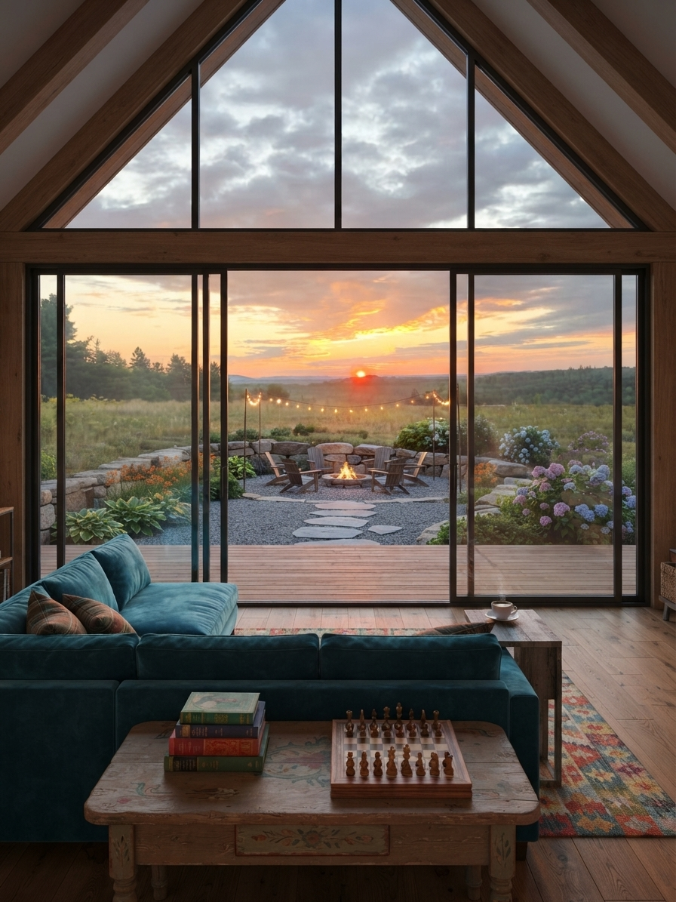

I just climbed back up the roped pilot ladder to the ship I will call home for the next three months. We are anchored on the Pacific side of the Panama Canal near a local geological feature called Guano Rock, a long way from the blueberry fields in Stockton Springs.
A few days ago, I helmed the ship through the canal for the first time. It was a massive milestone in my maritime career and one I am still trying to process. When I can carve out the time, I will edit the footage and put together a reel showing what that passage looks like from the wheelhouse.
A life between land and sea
That brings me to another update. I started a new Instagram account, @mikebarrens, for the daily and weekly pieces of my life that do not always fit on the official business page.
The farm stand account will naturally get quieter in the off-season, and my schedule at sea makes it hard to share ground-level updates from Maine when I am stationed in Central America. This new page gives me room to show the full picture: three months on the water, three months back on the land, and all the work happening in between.
The ride ashore
There is something strange about being anchored in a foreign country, taking a small crew launch into town, and watching the ship you call home fade into the distance. My clothes, my bed, my laptop, and my sketchbooks are all sitting on that steel hull. Nearly everything I need to live is out there on the water.
Today's ride had a little extra character. Rain was coming sideways as I climbed down the pilot ladder into the launch. The wind and seas picked up, and we screamed and thrashed our way toward shore. For a second I thought, What the hell am I even doing right now?
I was already soaked through, headed into town to buy souvenirs for the people I love back home. But the next time I touch solid ground will be in Golfito, Costa Rica, a month from now. That makes even a chaotic ride ashore feel worth it.
The other launch
While I have been moving between ship and shore, the business back home has crossed a threshold of its own. Sessa Farms LLC is officially formed. We have received our federal tax ID, opened the business bank account, and established The Barrens as the name we do business under.
None of those steps looks dramatic from the outside. They are forms, filings, signatures, and calls squeezed into whatever quiet hours I can find aboard the ship. Together, though, they turn an idea into something real. Sessa Farms is the company behind the agricultural operation. The Barrens is the name we are building in public: the farm stand, the wild blueberry operation, and the larger place and culture growing around them.
This is the soft launch. The doors are not open yet, and there is still a long list of work waiting back in Maine, but the foundation is in place. The business exists. The name is established. We are officially underway.

How did I get here?
As the crew starts counting down the days until we reach land again, I keep coming back to that question. If I had never stepped onto a merchant vessel seven years ago, where would I be? Would I be the same person? Was I always going to build The Barrens, or did this work give me the quiet hours and confidence to pull an idea out of my imagination and make it real?
I am grateful to be here, surrounded by a crew that feels like a second family and contributing to the scientific work this ship carries into the world. I am just as grateful for the people back home helping me keep an eye on the land while I am away.
Tomorrow the anchors come up, and we get underway for a scientific research expedition off the Galápagos Islands.
One course
The distance between this ship and our blueberry operation in Maine looks enormous on a map, but the two are tied together by the same work ethic, curiosity, and need to build something lasting. No matter where I am, part of every day goes toward that long term goal.
I have been sketching logos and merch concepts whenever I can. I am also working on a proposal for the Stockton Springs Town Council: a local art project that could become merchandise sold in town to directly benefit the lighthouse, with the artwork donated by me. That deserves its own story, and I will share more when the proposal is ready.
For now, Sessa Farms LLC is real, The Barrens is officially its DBA, and both the ship and the business are moving forward.
I cannot wait to pull back the curtain on the work happening out here and the progress taking shape back home.
- Mike